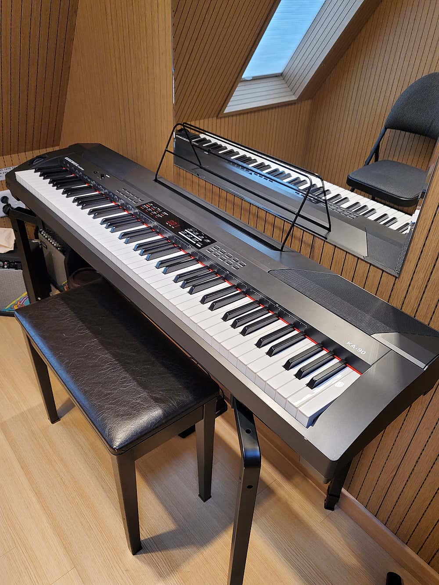
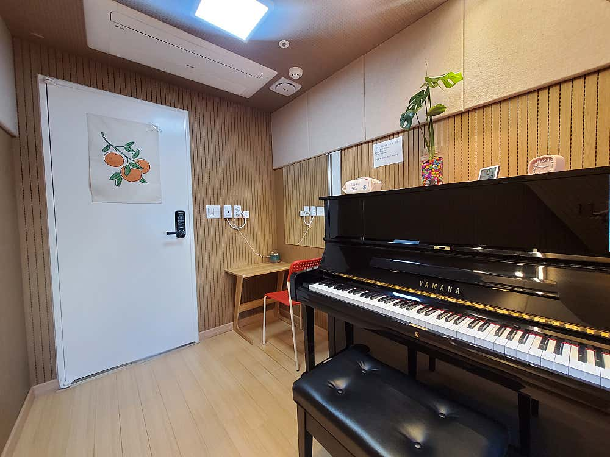
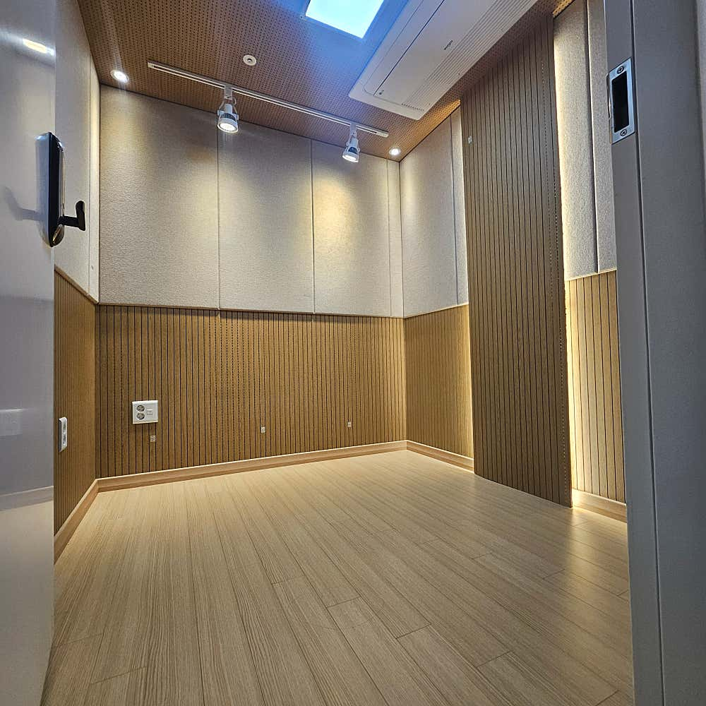
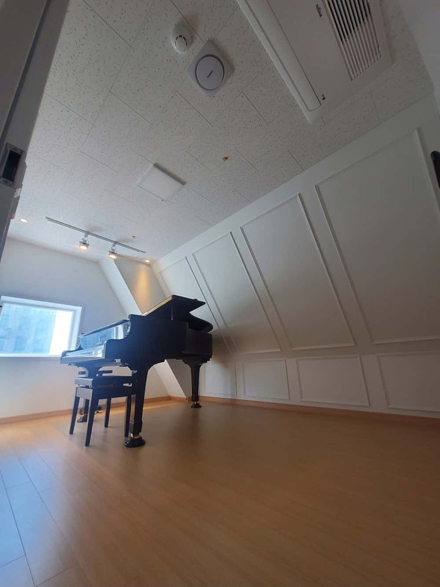

사진 크게 보기 ＋
사진 크게 보기 ＋

야마하 C6 홀 · 5번방 실제 공간 사진
인천 구월동 로데오 · 세동네오스 10층
24시간 연중무휴 최소 1시간 예약
공간 사진
개인 연습실.
피아노룸과 C6 홀.
방 번호를 선택해 7개 공간을 둘러보세요.
전체 방·요금 보기
사진 크게 보기 ＋
{kind=link}

사진 크게 보기 ＋ 사진 크게 보기 ＋
사진 크게 보기 ＋
{kind=link}

사진 크게 보기 ＋사진 크게 보기 ＋
Room 5
야마하 C6 홀
30분 15,000원 · 최소 1시간 예약
야마하 C6 그랜드피아노를 갖춘 넓은 홀입니다. 예약 가능 시간은 전화로 문의해 주세요.
{kind=link}

사진 크게 보기 ＋{kind=link}

사진 크게 보기 ＋전체 공간 요금표30분 기준 · 최소 1시간 예약
| 연습공간 | 30분당 요금 |
|---|---|
| Room 1 · 블루투스 작은방 | 2,500원1시간 5,000원 |
| Room 2 · 커즈와일 | 3,500원1시간 7,000원 |
| Room 3·4 · 업라이트 | 3,500원1시간 7,000원 |
| Room 9 · 개인 연습실 (임시 운영) | 2,500원1시간 5,000원 |
| Room 10 · 그랜드 G3 | 4,500원1시간 9,000원 |
| Room 5 · 야마하 C6 홀 | 15,000원1시간 30,000원 |
| 개인룸 | 변동 |
최소 1시간부터 예약할 수 있습니다. 1시간 금액은 표시된 30분 요금의 2배로 계산한 기본 이용금액입니다. 최종 요금은 네이버 예약에서 확인해 주세요. C6 홀과 개인룸은 전화로 문의해 주세요.
9번방은 월 이용 계약 전까지 임시 운영합니다. 현재 예약 가능한 방과 시간은 네이버 예약에서 확인해 주세요.
일반 연습실네이버에서 시간 확인
C6 홀·개인룸전화 문의
- 네이버의 예약 탭 선택
예약 링크를 열고 ‘예약’ 탭에서 원하는 방을 선택하세요.
- 날짜·시간과 금액 확인
최소 1시간부터 예약할 수 있습니다. 최종 요금과 취소·변경 조건을 확인하세요.
- 예약 확정·입실 안내 확인
예약이 확정되면 안내된 방법으로 방문해 주세요.
C6 홀과 개인룸은 전화로 예약 가능 시간 문의가 필요합니다.
30분만 예약할 수 있나요?
요금표는 30분 기준으로 표시하며, 예약은 최소 1시간부터 가능합니다. 원하는 공간과 시간을 선택한 뒤 네이버 예약에서 최종 이용금액을 확인해 주세요.
트럼펫이나 관악기도 연습할 수 있나요?
트럼펫·관악기 등 개인 악기 연습이 가능합니다. 피아노가 있는 공간과 개인 악기 연습공간 중 연습 목적에 맞게 선택해 주세요. 드럼 연습은 이용할 수 없습니다.
늦은 밤이나 주말에도 이용할 수 있나요?
SMC 인천 구월점은 24시간 연중무휴로 운영합니다. 방문 전에 원하는 시간의 예약 가능 여부와 예약 확정, 입실 안내를 확인해 주세요.
야마하 C6 홀은 어떻게 예약하나요?
야마하 C6 그랜드피아노가 있는 5번 홀은 전화로 예약 가능 시간을 문의해 주세요. 홈페이지의 전화 문의 버튼으로 연결할 수 있습니다.
주차는 어디에 하면 되나요?
연습실 건물 내 주차는 불가합니다. 인근 인천 문화예술회관 공영주차장 또는 뉴코아 인천점 주차장을 이용해 주세요. 각 주차장의 운영시간과 요금은 방문 전에 확인해 주세요.
지하철
인천터미널역 2번 출구 또는 예술회관역 5·6번 출구에서 방문하세요.
운영 시간
24시간 연중무휴방문 전 예약 확정과 입실 안내를 확인해 주세요.
주차 안내
건물 내 주차는 불가합니다.인근 문화예술회관 공영주차장 또는 뉴코아 인천점 주차장을 이용해 주세요.